Typeform to Welcome Email + Google Drive: Make.com
A potential client fills out your intake form. Then they wait — no welcome email, no shared folder, no sign that anyone is actually working on their project. Meanwhile, you're copying their details by hand and creating folders manually. This Make.com tutorial automates the entire first impression: every Typeform submission instantly creates a named Google Drive folder, generates a shareable link, and sends the client a personalized welcome email with direct access to their project folder. This guide shows you exactly how to connect Typeform to Google Drive and Gmail using Make.com — no code, no manual steps, runs forever once set up.
Why Your First Response Defines the Client Relationship
The gap between a client submitting an inquiry and receiving a professional response is where trust is built or lost. Most freelancers and agencies take hours — sometimes days — to manually create a project folder, set up sharing, and send a welcome email. By then the client has already formed an opinion: this team is slow. A welcome email that arrives within seconds of form submission, complete with a shared project folder, signals organization and professionalism. It tells the client their project matters. And it costs you zero effort after the initial 25-minute setup.
How the Typeform to Welcome Email Automation Works
When someone submits your Typeform client onboarding form, Make.com catches the response instantly and runs three actions: it creates a named Google Drive folder inside your "Client Projects" directory, generates a shareable link so the client can access it without needing a Google account, and sends a personalized welcome email with the folder link — all within seconds of the form submission.
You can build this entire automation on Make.com's free plan in about 25 minutes — no credit card required. Start free on Make.com →
Need a client onboarding form? Build one in minutes with Typeform's drag-and-drop form builder. Try Typeform free →
What Happens Automatically on Every Submission
| Action | Detail | Example |
|---|---|---|
| Google Drive folder created | Named with company + timestamp | Olive Tree — 2026-02-28 |
| Shareable link generated | Anyone with the link can access | drive.google.com/drive/folders/... |
| Welcome email sent | Personalized with name and folder link | "Hi John, here's your project folder" |
Why Not Just Use Typeform's Native Integrations?
Typeform has built-in integrations with Google Drive and email tools. They work for basic setups — but they can't do what this workflow does. Typeform's native Google Drive integration can upload files, but it can't create named folders dynamically based on form responses. There's no way to generate a shareable link and include it in an automated email. And if you want the folder name to include the company name and submission date, native integrations don't support that kind of dynamic logic. Make.com connects these steps into a single workflow where the output of one action — like the folder ID from Google Drive — feeds directly into the next action — like the shareable link in your welcome email.
Don't Use Gmail? Alternatives That Work the Same Way
This guide uses Gmail for the welcome email, but Make.com supports any email tool. If your team uses a different platform, swap the Gmail module for one of these — the rest of the workflow stays identical. Outlook / Microsoft 365: select the Microsoft 365 Email module and configure it the same way. SMTP: connect any email provider that supports SMTP for full control over sending. SendGrid or Mailgun: for transactional email at scale with better deliverability tracking.
How to Build the Typeform Client Onboarding Automation
- Create a free Make.com account — no credit card required. Click "Create a new scenario" on your dashboard. You'll see an empty canvas with a large purple + button in the center.
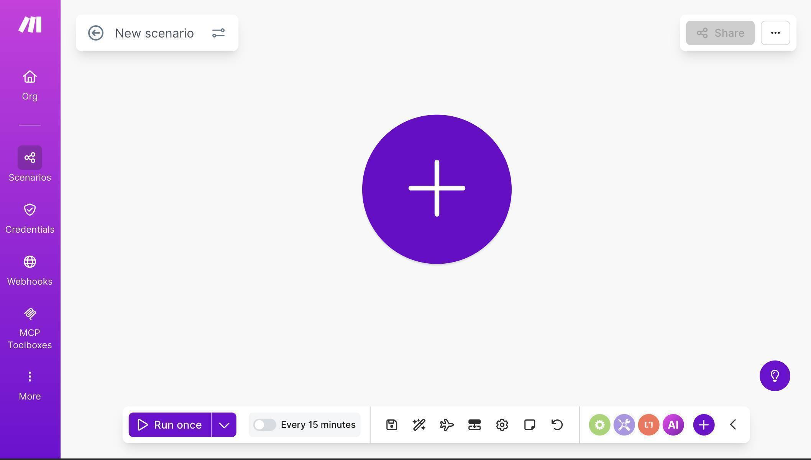
Make.com scenario canvas — empty canvas ready to build a new automation - Click the + button and search for "Typeform" — select the Watch Responses module marked INSTANT. This uses webhooks to trigger the moment someone submits your form, instead of polling on a schedule. The INSTANT version is faster and uses fewer Make.com operations.
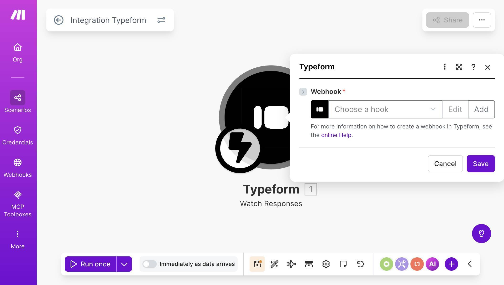
Typeform Watch Responses INSTANT module — webhook configuration dialog - Click "Add" to create a new webhook. Name it (e.g. "Client Onboarding Form"), connect your Typeform account through OAuth, and select your onboarding form from the Form ID dropdown. Set Enabled to "Yes" so the webhook starts listening immediately.
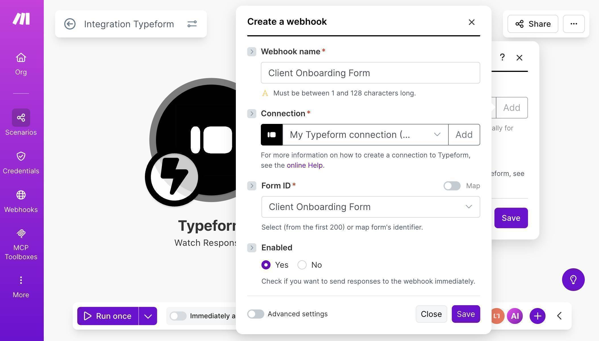
Typeform webhook configured — connection established, Client Onboarding Form selected, webhook enabled - 💡 Pro Tip: Always choose the INSTANT (webhook) version of the Typeform module over the standard polling version. Webhooks trigger the moment someone submits — polling checks every 15 minutes on the free plan. Your client gets a welcome email in seconds instead of waiting up to 15 minutes.
- Add a Google Drive module — click the + button to the right of the Typeform module, search for "Google Drive" and select "Create a Folder." Click "Create a connection" to link your Google account.
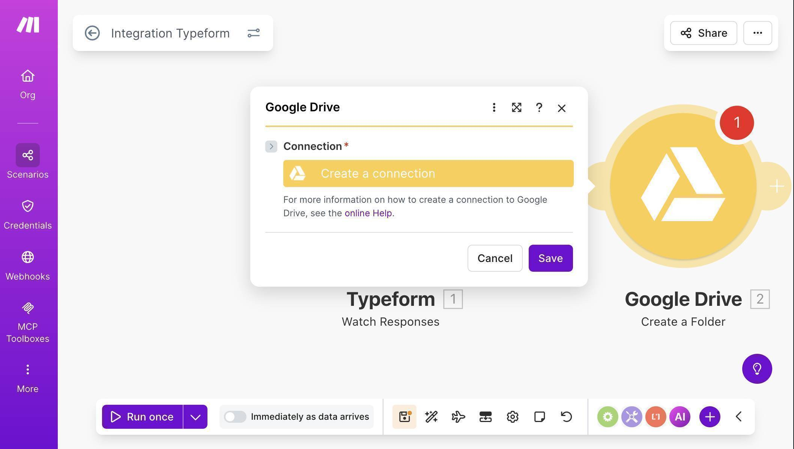
Google Drive Create a Folder module — click Create a connection to link your Google account - Google Drive is a restricted Google API, which means the standard one-click connection may not work for personal Gmail accounts. If you see an error, you'll need to create a custom OAuth client — a free, one-time setup in Google Cloud Console that takes about 10 minutes. Toggle "Advanced settings" on and enter your Client ID and Client Secret from Google Cloud.
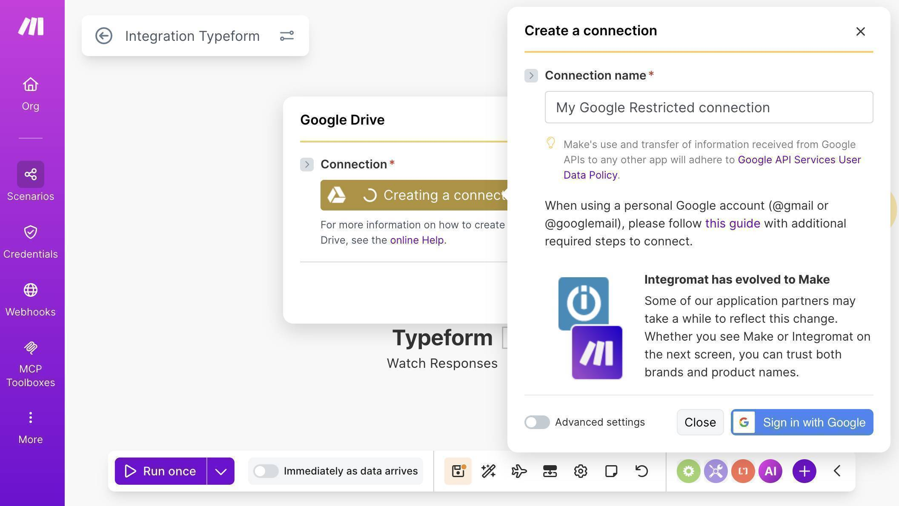
Google Drive connection dialog — Advanced settings with custom OAuth credentials for restricted API access - 💡 Pro Tip: Google Sheets connects with one click in Make.com, but Google Drive requires a custom OAuth client for personal Gmail accounts. This is a free, one-time setup that takes about 10 minutes. Follow Make.com's official guide to configure it. Make sure your redirect URI matches exactly — even a trailing slash difference will cause an error.
- Configure the Create a Folder module — set New Drive Location to "My Drive", select your "Client Projects" folder as the parent location, and map the folder name dynamically. Use the Company Name field from Typeform combined with a dash and the Submitted At timestamp. This creates folders like "Olive Tree — 2026-02-28" that sort chronologically and are easy to identify.
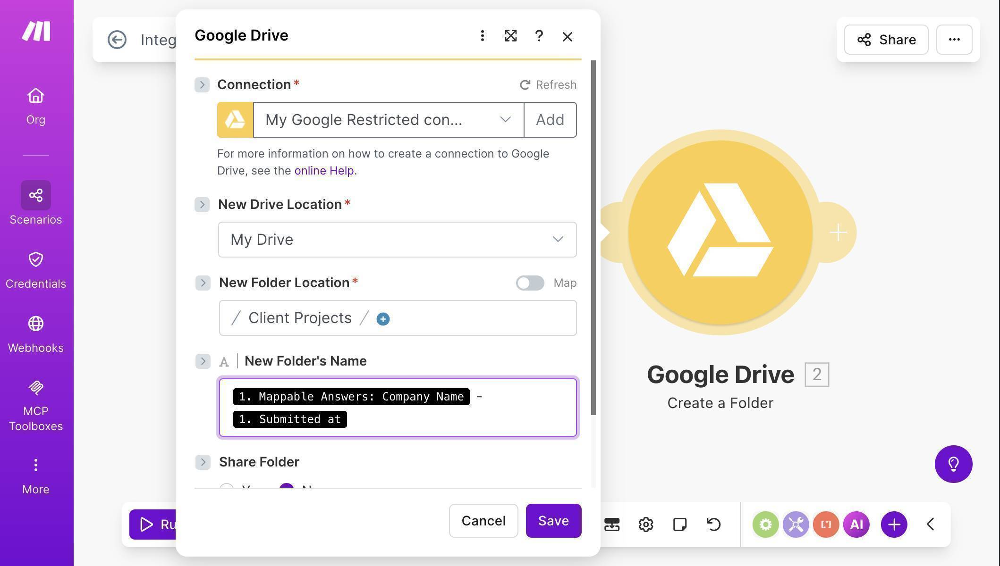
Google Drive Create a Folder — folder name mapped from Typeform Company Name and submission timestamp - Add a second Google Drive module — click the + button after Create a Folder, search for "Google Drive" again and select "Get a Share Link." This module generates a shareable URL for the folder you just created. Set Choose a Drive to "My Drive", Select to "Folder", and map the Folder ID from the previous Create a Folder module. Set Role to "Writer" and Type to "Anyone" — this ensures the client can access the folder without needing a Google account.
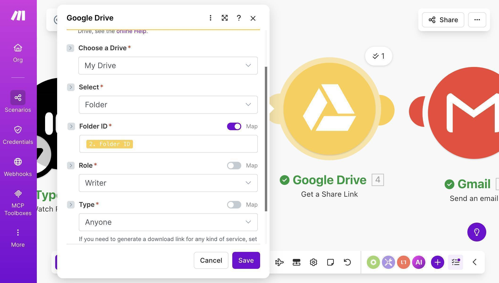
Google Drive Get a Share Link — Folder ID mapped, Role set to Writer, Type set to Anyone - 💡 Pro Tip: Set the share type to "Anyone" instead of sharing by email address. Not all clients have Google accounts — sharing by email will fail for non-Google users and break your automation. "Anyone with the link" ensures every client can access their folder regardless of what email provider they use.
- Add a Gmail module — click the + button after Get a Share Link, search for "Gmail" and select "Send an Email." Connect your Google account when prompted. Map the To field to the Email Address from your Typeform response. Set the Subject to something clear like "Welcome to IntegrateHub — Next Steps."
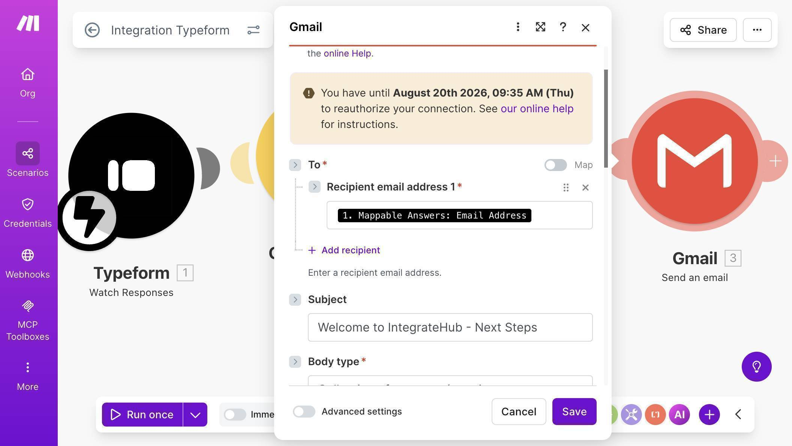
Gmail module — To field mapped to Typeform email, Subject line configured - Set Body type to "Collection of contents" and compose your welcome email. Map the client's Full Name from Typeform and the Share Link from the Get a Share Link module. The result is a personalized email that includes a direct link to the client's project folder — sent automatically within seconds of form submission.
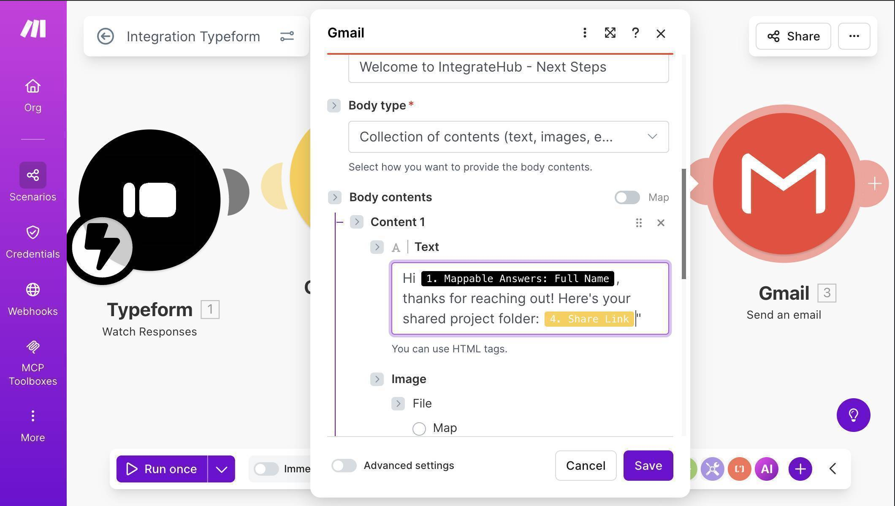
Gmail body with mapped fields — personalized greeting with client name and Google Drive folder link - Save the scenario — your canvas should now show four connected modules: Typeform Watch Responses → Google Drive Create a Folder → Google Drive Get a Share Link → Gmail Send an Email. Click "Run once" to activate the webhook listener.
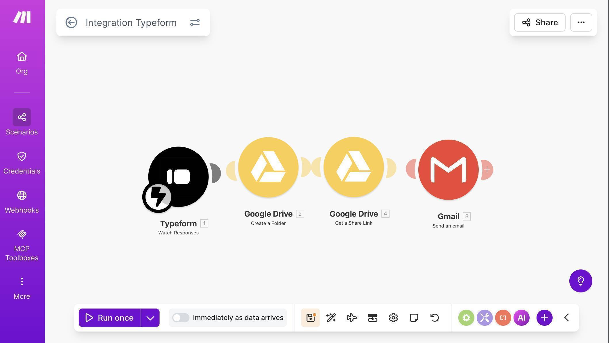
Complete Make.com scenario — four modules connected: Typeform, Google Drive Create Folder, Get Share Link, and Gmail - Test the workflow — open your Typeform link in an incognito browser window and submit a test response with realistic data.
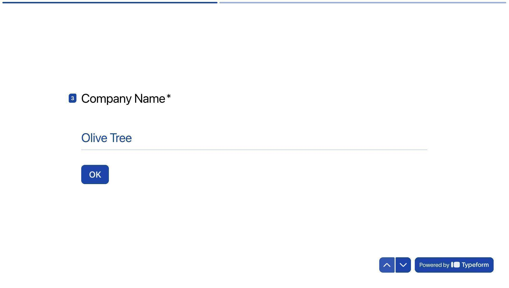
Typeform live form — test submission with sample company name - Check your Google Drive — the folder appears inside "Client Projects" with the company name and timestamp, exactly as configured. Each new submission creates a separate, organized folder automatically.
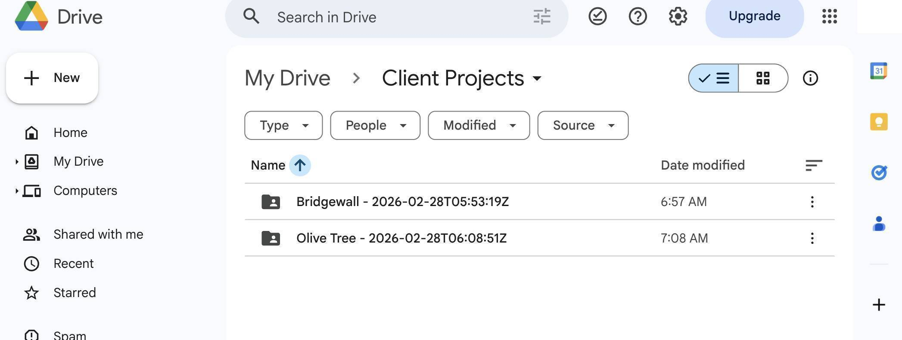
Google Drive Client Projects folder — two automatically created client folders with company names and dates - Check your sent email — the welcome message was sent automatically with the client's name and a direct link to their Google Drive folder. The client receives this within seconds of submitting the form.
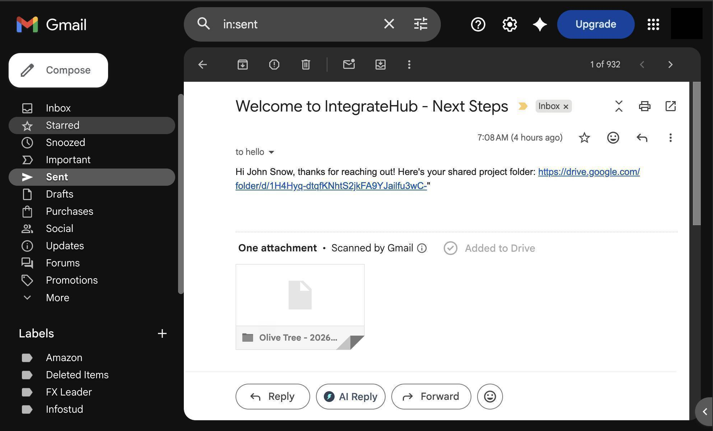
Gmail sent folder — welcome email with personalized greeting and Google Drive folder link delivered automatically - Toggle the scenario ON — flip the switch at the bottom of the canvas to activate the automation. It now runs automatically for every new Typeform submission, creating a folder, generating a share link, and sending the welcome email without any manual work.
Who Should Use This Automation
This workflow is built for anyone who takes on clients through an intake form and wants to make a strong first impression automatically. Freelancers who onboard new clients and need a shared workspace for deliverables. Agencies that create project folders for every new client and want to eliminate the manual setup. Consultants who send welcome packets and need a professional, immediate response to inquiries. Small business owners who receive service requests and want clients to feel taken care of from the first interaction. If you onboard more than 3 clients per month, this automation pays for itself in time saved on the first day.
Apps Used in This Automation
This workflow connects three tools, all of which have free tiers. Typeform captures the client onboarding data through a conversational form experience — its free plan supports up to 10 responses per month. Make.com orchestrates the entire workflow, connecting Typeform to Google Drive and Gmail — the free plan includes 1,000 operations per month. Google Drive stores the project folders and generates shareable links — 15 GB of free storage is more than enough for getting started. Gmail sends the personalized welcome email — it works with any standard Gmail account.
Frequently Asked Questions
Does this work with Typeform's free plan?
Yes. Typeform's free plan supports webhook integrations through Make.com. You can use this automation with any Typeform tier, though the free plan limits you to 10 responses per month.
Why does Google Drive need a custom OAuth connection?
Google Drive is classified as a restricted API by Google. For personal Gmail accounts, Make.com's default connection may not have access. Creating a custom OAuth client in Google Cloud Console is free and only needs to be done once — after that, the connection works permanently.
What if my client doesn't have a Google account?
That's exactly why we set the share type to "Anyone with the link" instead of sharing by email address. This generates a public link that works for anyone, regardless of whether they have a Google account.
Can I customize the welcome email template?
Yes. The Gmail module supports HTML in the body field, so you can format the email with headers, links, and styling. You can also add more mapped fields from Typeform — like project type or budget — to make the email more detailed.
What happens if the Google Drive folder creation fails?
If any module fails, Make.com stops the scenario and logs the error. The remaining modules — like sending the email — won't run. You can add error handling to retry failed steps or send yourself a notification when something breaks.
Do I need a paid Make.com plan?
The free plan includes 1,000 operations per month. Each time this scenario runs, it uses 4 operations — one per module. That covers 250 client submissions per month, more than enough for most freelancers and small agencies.